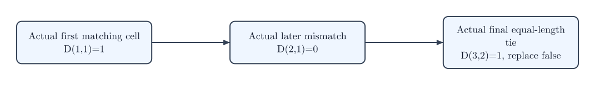
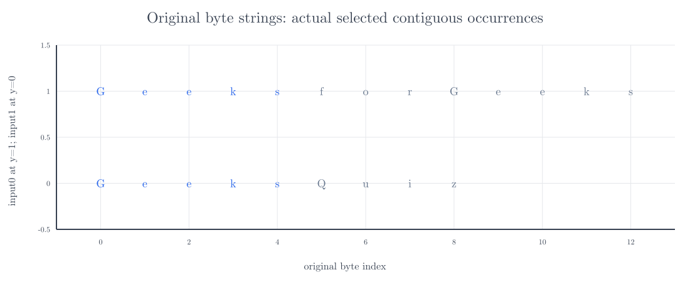
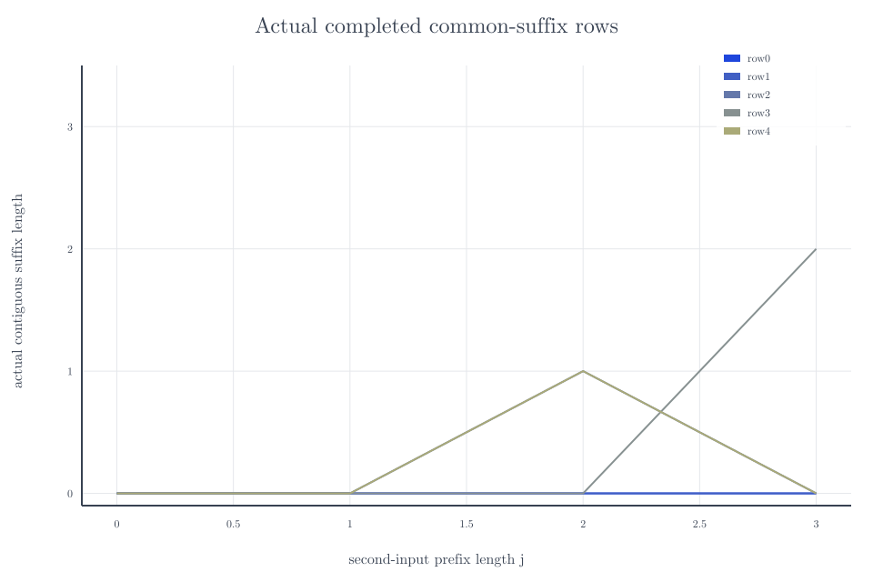
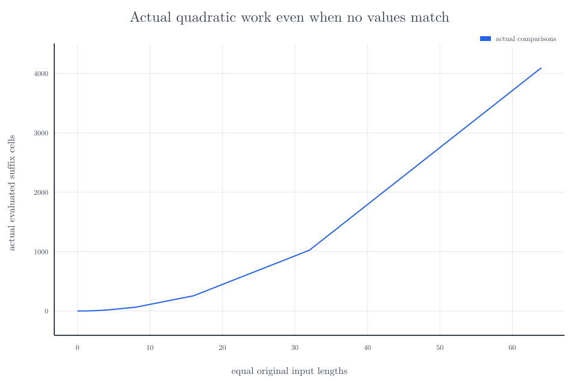

Longest common substring
Abstract
A common substring is contiguous in both sequences. The common-suffix dynamic program extends equal diagonals and resets mismatches to zero. We retain the original GeeksforGeeks/GeeksQuiz example, expose actual producing rows and first-maximizer positions, and distinguish its rolling working storage from an optional complete trace.
A tiny suffix extension and reset
Let D(i,j) be the length of the longest common suffix of the first i and j elements. Boundary values are zero. If a[i−1]=b[j−1], D(i,j)=D(i−1,j−1)+1; otherwise D(i,j)=0. Every common contiguous run ends at some such prefix pair, so the maximum of these suffix lengths is the global longest common substring length. Only a diagonal can extend a contiguous match: taking an up/left maximum would instead solve a subsequence problem.
For a=[1,9,2] and b=[1,2], the longest shared substring has length one, despite the shared subsequence[1,2] having length two. The actual first strict maximum selects value1. The later equal-length value2 does not replace it. The tiny diagram links actual real cell observations without implying they are adjacent chronological writes.
#include <dm/dm.hpp>
int main() {
std::filesystem::create_directories("build");
auto t = dm::algorithms::lcsubstring_trace({1, 9, 2}, {1, 2});
std::print("| actual prefix i | actual prefix j | actual equality | actual diagonal read | actual " "written suffix length | strict new best |\n| ---: | ---: | --- | ---: | ---: | --- |\n");
for (auto &c : t.cells)
std::print("| {} | {} | {} | {} | {} | {} |\n", c.i, c.j, c.equal,
c.diagonal, c.value, c.new_best);
auto &first = t.cells.front();
auto &reset = t.cells[2];
auto &last = t.cells.back();
dm::graphics::Diagram d;
d.node("first", {0, 0},
std::format("Actual first matching cell\nD({},{})={}", first.i,
first.j, first.value)).node("reset", {6, 0},
std::format(
"Actual later mismatch\nD({},{})={}",
reset.i, reset.j, reset.value)).node("tie", {12, 0}, std::format("Actual final equal-length tie\nD({},{})={}, replace {}", last.i, last.j, last.value, last.new_best)).edge("first", "reset").edge("reset", "tie");
d.save_svg("build/lcsubstring_tiny.svg");
}| actual prefix i | actual prefix j | actual equality | actual diagonal read | actual written suffix length | strict new best |
|---|---|---|---|---|---|
| 1 | 1 | true | 0 | 1 | true |
| 1 | 2 | false | 0 | 0 | false |
| 2 | 1 | false | 0 | 0 | false |
| 2 | 2 | false | 0 | 0 | false |
| 3 | 1 | false | 0 | 0 | false |
| 3 | 2 | true | 0 | 1 | false |

Original shared byte run
Retain a=GeeksforGeeks and b=GeeksQuiz. The returned run is Geeks, and the actual producer selects its first occurrence at index zero in each input. A repeated occurrence in the first input does not displace that strict maximum. Positions below come from the producing DP, not a separate find() that could obscure tie identities.
The native byte conversion maps every input byte to an integer in0..255, including embedded NULs. This is case-sensitive byte matching, not Unicode codepoint or grapheme matching. The original ASCII fixture needs no external dataset.
#include <dm/dm.hpp>
int main() {
std::filesystem::create_directories("build");
auto a =
dm::algorithms::lcsubstring_bytes("GeeksforGeeks"), b =
dm::algorithms::lcsubstring_bytes("GeeksQuiz");
auto t = dm::algorithms::lcsubstring_trace(a, b);
auto &r = t.analysis;
std::string run(r.sequence.begin(), r.sequence.end());
std::print("Actual selected run {}; actual length {}; actual first start {}; actual second start {}; " "actual DP cells {}.\n\n| input | source index | byte | selected occurrence |\n| --- | ---: " "| --- | --- |\n",
run, r.length, r.a_start, r.b_start, r.work.cells);
auto p = dm::graphics::RPlot::create();
for (int side = 0; side < 2; ++side) {
auto &values = side == 0 ? a : b;
auto start = side == 0 ? r.a_start : r.b_start;
for (std::size_t i = 0; i < values.size(); ++i) {
bool selected = i >= start && i < start + r.length;
std::print("| {} | {} | {} | {} |\n", side, i, char(values[i]),
selected);
p.text(i, 1 - side, std::string(1, char(values[i])),
selected ? dm::graphics::RGB{37, 99, 235}
: dm::graphics::RGB{100, 116, 139}, 18);
}
}
p.size(1100, 450).x_limits(-1, 13).y_limits(-.5, 1.5).title(
"Original byte strings: actual selected contiguous occurrences").x_label("original byte index").y_label("input0 at y=1; input1 at y=0").save_svg("build/lcsubstring_original.svg");
}Actual selected run Geeks; actual length 5; actual first start 0; actual second start 0; actual DP cells 117.
| input | source index | byte | selected occurrence |
|---|---|---|---|
| 0 | 0 | G | true |
| 0 | 1 | e | true |
| 0 | 2 | e | true |
| 0 | 3 | k | true |
| 0 | 4 | s | true |
| 0 | 5 | f | false |
| 0 | 6 | o | false |
| 0 | 7 | r | false |
| 0 | 8 | G | false |
| 0 | 9 | e | false |
| 0 | 10 | e | false |
| 0 | 11 | k | false |
| 0 | 12 | s | false |
| 1 | 0 | G | true |
| 1 | 1 | e | true |
| 1 | 2 | e | true |
| 1 | 3 | k | true |
| 1 | 4 | s | true |
| 1 | 5 | Q | false |
| 1 | 6 | u | false |
| 1 | 7 | i | false |
| 1 | 8 | z | false |

Actual rolling rows are a table observation
Only the preceding row is needed for the next diagonal recurrence. The ordinary method therefore uses two rows of size m+1 for a fixed second-input length m, plus its returned output. It does not allocate the n-by-m table claimed by the former header. The trace copies each completed real rolling row and records every actual write in the same producer; it never reruns input prefixes or recomputes a display table.
The next small example has the contiguous run[2,3] even though a later repeated2 can create a separate suffix of length one. The plotted rows are actual committed row snapshots, with the zero boundary included.
#include <dm/dm.hpp>
int main() {
std::filesystem::create_directories("build");
auto t = dm::algorithms::lcsubstring_trace({1, 2, 3, 2}, {0, 2, 3});
auto p = dm::graphics::RPlot::create();
std::print("| actual completed prefix i | actual prefix j | actual suffix length |\n| ---: | ---: | " "---: |\n");
for (std::size_t i = 0; i < t.rows.size(); ++i) {
std::vector<double> x, y;
for (std::size_t j = 0; j < t.rows[i].size(); ++j) {
x.push_back(j);
y.push_back(t.rows[i][j]);
std::print("| {} | {} | {} |\n", i, j, t.rows[i][j]);
}
p.line(x, y, std::format("row{}", i),
{int(30 + 35 * i), int(70 + 25 * i), int(220 - 25 * i)}, 2);
}
p.y_limits(-.1, 3.5).title("Actual completed common-suffix rows").x_label(
"second-input prefix length j").y_label("actual contiguous suffix length").save_svg("build/lcsubstring_rows.svg");
}| actual completed prefix i | actual prefix j | actual suffix length |
|---|---|---|
| 0 | 0 | 0 |
| 0 | 1 | 0 |
| 0 | 2 | 0 |
| 0 | 3 | 0 |
| 1 | 0 | 0 |
| 1 | 1 | 0 |
| 1 | 2 | 0 |
| 1 | 3 | 0 |
| 2 | 0 | 0 |
| 2 | 1 | 0 |
| 2 | 2 | 1 |
| 2 | 3 | 0 |
| 3 | 0 | 0 |
| 3 | 1 | 0 |
| 3 | 2 | 0 |
| 3 | 3 | 2 |
| 4 | 0 | 0 |
| 4 | 1 | 0 |
| 4 | 2 | 1 |
| 4 | 3 | 0 |

Work, capture and edge cases
Every nonboundary pair is compared once, so n*m actual comparisons split into matching diagonal extensions and mismatch resets. Strict best updates occur only when a longer suffix is found. Swapping inputs can change tie selection and the second-input working-row length; the API deliberately preserves the original input orientation. Empty inputs produce an empty selected run with both starts zero; the initial zero row remains a real capture observation.
Complete size/count geometry is checked before allocation. A trace admits n+m+(n+1)*(m+1)+n*m logical input elements, completed-row cells and actual cell records before copying/evaluation. Default cap is one million; zero disables only that optional cap. Fields, row headers, capacities, returned/runtime copies and bytes are excluded. Complete trace storage is O(n*m+n+m), whereas ordinary auxiliary rows are O(m). No wall-clock timing is inferred from these selected work counts.
#include <dm/dm.hpp>
int main() {
std::filesystem::create_directories("build");
std::vector<double> x, y;
std::print("| original first length | original second length | actual comparisons | actual matches | " "actual resets | actual returned length |\n| ---: | ---: | ---: | ---: | ---: | ---: |\n");
for (std::size_t n : {0, 1, 2, 4, 8, 16, 32, 64}) {
std::vector<int> a(n, 1), b(n, 2);
auto r = dm::algorithms::lcsubstring_analyze(a, b);
std::print("| {} | {} | {} | {} | {} | {} |\n", n, n, r.work.cells,
r.work.matches, r.work.resets, r.length);
x.push_back(n);
y.push_back(r.work.cells);
}
auto p = dm::graphics::RPlot::create();
p.line(x, y, "actual comparisons", {37, 99, 235}, 2).title(
"Actual quadratic work even when no values match").x_label(
"equal original input lengths").y_label("actual evaluated suffix cells").save_svg("build/lcsubstring_work.svg");
}| original first length | original second length | actual comparisons | actual matches | actual resets | actual returned length |
|---|---|---|---|---|---|
| 0 | 0 | 0 | 0 | 0 | 0 |
| 1 | 1 | 1 | 0 | 1 | 0 |
| 2 | 2 | 4 | 0 | 4 | 0 |
| 4 | 4 | 16 | 0 | 16 | 0 |
| 8 | 8 | 64 | 0 | 64 | 0 |
| 16 | 16 | 256 | 0 | 256 | 0 |
| 32 | 32 | 1024 | 0 | 1024 | 0 |
| 64 | 64 | 4096 | 0 | 4096 | 0 |

Verification and references
Native tests exhaust all3969 pairs of binary words through length five and
independently recover every cell’s suffix length by backward contiguous
comparison. They verify every real row, strict record decision, selected
occurrence, work count and quota, retain the original Geeks example, distinguish
substring from subsequence, and cover signed-int extremes, NUL/high bytes, empty
cases and ownership. The ten-report batch passes 95 CTest cases, 30 directly
instrumented ASan/UBSan cases, 121 compiled and executed public examples,
601/601 scoped documentation definitions and 11 representative hovers.
Independent integer, Fraction, graph, string and NumPy references verify 82,729
records, including the complete original seeded LSH study. Frozen comparisons
preserve ordinary legacy results; malformed-input, sentinel-collision, ownership
and explicit-budget corrections are documented above. Thirteen checkout headers
and thirteen installed headers compile independently, and an installed-header
native consumer links and runs. Each complete report program runs against the
checkout library; all four native figures are reviewed and HTML/Markdown exports
preserve computed results and image bytes. Batch receipts:
build/mepml-conversion/batch-214-223/.
The common-suffix recurrence is the standard dynamic-programming solution to longest common substring, with contiguity established by the diagonal extension and mismatch reset. NIST Dictionary of Algorithms and Data Structures: longest common substring distinguishes this problem from longest common subsequence; the storage and exact tie policy here describe this concrete rolling-row producer.